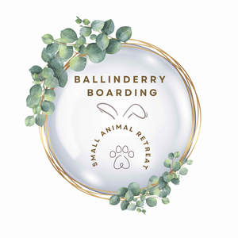

Trade Mark Journal No.2025/014 4 April 2025
UK00004173402 13 March 2025 (31,35,41,43,44)

- Class 31
- Pet food; Food (Pet -); Pet rabbit food; Pet foods; Pet foodstuffs; Animal food; Pet beverages; Food for animals; Foodstuffs for pet animals; Hamster food; Rabbit food; Food for hamsters; Pet animals; Pet foods in the form of chews; Edible pet treats; Edible food for animals for chewing; Food for rodents; Food products for animals; Oat-based food for animals; Beverages for pets; Animal beverages; Animal foodstuffs; Foodstuffs (Animal -); Foodstuffs for animals; Animal foodstuffs derived from hay; Foodstuff for animals; Animal foodstuffs derived from vegetable matter; Foodstuffs for domestic animals; Animal foodstuffs containing hay; Animal foodstuffs in the form of pellets; Animal foodstuffs derived from air-cured hay; Animal foodstuffs containing air-cured hay; Edible chewing products for domestic animals; Animal biscuits; Weeds for human or animal consumption; Foodstuffs for animals containing botanical extracts; Animal feed; Edible treats for animals; Edible chews for animals; Chews for animals (Edible -); Animals (Edible chews for -); Forage for animals; Cereals preparations being food for animals; Fortified food substances for animals; Beverages for animals; Cereals products for consumption by animals; Cereal based foodstuffs for animals; Maize products for consumption by animals; Foodstuffs and fodder for animals; Feedingstuffs for animals; Cereals (Residual products of -) for animal consumption; Animal foodstuffs consisting of soya bean products; Bark-based products for use as animal litter; Canned or preserved foods for animals; Bedding materials for animals; Bedding and litter for animals; Litter for animals; Animal litter; Cat litter and litter for small animals; Sand for pet toilets; Bark for use as animal litter; Small animal litter; Hamsters; Chopped straw for animal bedding; Forage; Strengthening animal forage; Straw [forage].
- Class 35
- Pet food and pet beverages; Retail services in relation to Animal food, Animal foodstuffs, Food products for animals, Edible food for animals for chewing, Edible treats for animals; Retail services in relation to Toys and playthings for pet animals; Retail services in relation to pet cages and carriers; Retail services in relation to pet cleaning supplies; Retail services in relation to pet furniture; Retail services in relation to pet waste disposal products; Retail services in relation to pet products; Retail services in relation to litter for animals; Retail services in relation to animal grooming preparations; Retail services in relation to bedding for animals; Wholesale services in relation to animal grooming preparations; Wholesale services in relation to litter for animals; Wholesale services in relation to bedding for animals; Wholesale services in relation to beauty implements for animals.
- Class 41
- Teaching of pet care; Tuition in animal training; Services for animal training; Tuition in kennel management; Teaching of petcare; Animal training.
- Class 43
- Pet boarding services; Boarding for pets; Pet hotel services; Pet day care services; Boarding for animals; Animals (Boarding for -); Animal boarding; Boarding kennel services.
- Class 44
- Services for the care of pet animals; Pet grooming services; Care of pet animals; Pet grooming; Grooming (Pet -); Advisory services relating to the care of pet animals; Grooming of animals; Grooming of pets; Animal grooming; Grooming (Animal -); Hygienic care for animals; Grooming salon services for pet animals; Hygienic and beauty care for animals; Animal healthcare services; Animal grooming services.
Denise Moore